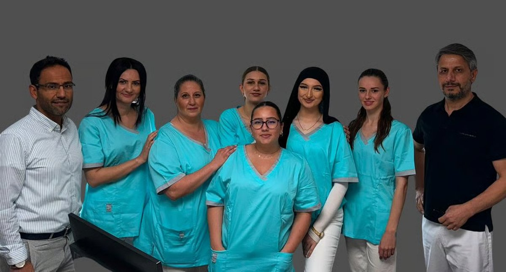

Beweglich bleiben — mit moderner Orthopädie in Hagen & Ennepetal
Dr. med. Sheer A. Hakimi und sein Team behandeln Schulter, Fuß, Hand und Gelenke mit langjähriger Erfahrung in konservativer und operativer Orthopädie — persönlich, modern und auf dem neuesten medizinischen Stand.
Orthopädie & Unfallchirurgie aus einer Hand — von der ersten Diagnose bis zur spezialisierten Therapie, an beiden Standorten.
0Leistungen im Angebot
0fachliche Schwerpunkte
0Behandlungsarten
0Standorte, ein Standard
Schulterchirurgie
Diagnostik und Therapie von Rotatorenmanschette, Impingement und Instabilitäten — konservativ und operativ.
Fuß- & Sprunggelenkchirurgie
D.A.F.-zertifizierte Expertise bei Fehlstellungen, Arthrose und Sportverletzungen des Fußes.
Handchirurgie
Behandlung von Verletzungen und Erkrankungen der Hand, inklusive plastisch-rekonstruktiver Eingriffe.
Unfallchirurgie
Schnelle, kompetente Versorgung von Verletzungen des Bewegungsapparats — auch bei Sport- und Arbeitsunfällen.
Konservative Orthopädie
Individuelle Therapiekonzepte bei Gelenk- und Rückenbeschwerden — von Physiotherapie bis Infiltration.
Sport- & Präventivmedizin
Beratung und Behandlung für aktive Patient:innen — Verletzungsprävention und Rückkehr in den Sport.
Alle Leistungen im Detail
Nach Behandlungsart filtern und antippen für Details — genau wie in unserer Praxis der Ablauf von Diagnostik bis Therapie aufgebaut ist.
Für diese Kategorie sind aktuell keine Leistungen hinterlegt.
Notfallsprechstunde täglich — Ennepetal 07:45 Uhr, Hagen-Boele 08:00 Uhr. Online-Termine buchen Sie bequem über unsere Startseite.

Zwei Standorte, ein eingespieltes Team
Über die Praxis
Orthotraum heißt Sie willkommen
Sie profitieren von unseren aktuellsten medizinischen Leistungen. Unser Team bietet Ihnen ein breites Spektrum der orthopädisch und unfallchirurgischen Leistungen an. Unser Schwerpunkt liegt nicht nur im gesamten Bereich der konservativen Orthopädie, sondern auch in speziellen Gebieten wie Schultergelenk, Fuß und Hand.
An unseren Standorten in Hagen-Boele und Ennepetal begleiten Sie erfahrene Fachärzte gemeinsam mit einem eingespielten Team aus medizinischen Fachangestellten — persönlich, digital organisiert und auf aktuellstem medizinischem Niveau. Die Praxis behandelt gesetzlich sowie privat versicherte Patient:innen und Selbstzahler.